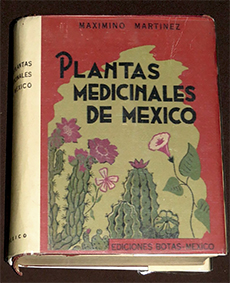

Referencias
- Cuevas, C.M. de C. y C. López. 2009. Cambios de gobierno en la vida de un botánico mexicano: Maximino Martínez (1888-1964). HMex Vol. LVIII (3): 973-1004.
- Ruiz, M.T. 2000. Ser curandero en Uruapan. Colegio de Michoacán e Instituto Michoacano de Cultura. 318 p.
- Rzedowski,J. 1965. Maximino Martínez (1888-1964). Taxon Vol. XIV (6): 173-178.
- Valdéz, J. 1994. Maximino Martínez (1888-1964). Grupo Etnobotánico Latinoamericano.
Maximino Martínez
1888 - 1964
Maximino Martínez fue un destacado botánico que nació en 1888 en San Miguel Regla, estado de Hidalgo, y murió en la Ciudad de México en 1964.
Cursó sus estudios primarios en su tierra natal, donde más tarde obtuvo el título de Profesor de Instrucción Primaria. En 1908 se mudó a la capital del país para estudiar en la Escuela Normal donde se recibió y fue profesor. De 1914 a 1929 fungió como Encargado de la Sección de Botánica del Museo Nacional de Historia Natural.
Dentro de la botánica, su principal interés fueron los grupos forestales de los pinos, piceas, romerillos y encinos, de los que describió varias especies nuevas e hizo estudios sobre su distribución geográfica.
En 1941 junto con un grupo de investigadores fundó la Sociedad Botánica de México, siendo director por varios años y editor del boletín de la sociedad durante catorce. También fue investigador al Instituto de Biología de la Universidad Nacional Autónoma de México e impartió clases en la Escuela Nacional Forestal y en la Escuela Nacional de Ciencias Biológicas del Politécnico Nacional, donde fundó un Herbario.
Entre sus trabajos se encuentra el libro Catálogo de nombres vulgares y científicos de plantas mexicanas (1923), magna obra en la que incluyó los nombres de las plantas en náhuatl y que además dio pie para la publicación de posteriores ediciones aumentadas: Las plantas más útiles que existen en la República Mexicana (1928) y Las plantas medicinales de México (1934), obra considerada de gran importancia por la vasta información que contiene sobre la herbolaria mexicana.
Mis favoritos
- Pino (Pinus sp.)
- Foto: Carlos Galindo Leal / Banco de imágenes, CONABIO
Mis lugares
Mis ideas
- 

- Imágenes: Abebooks.it